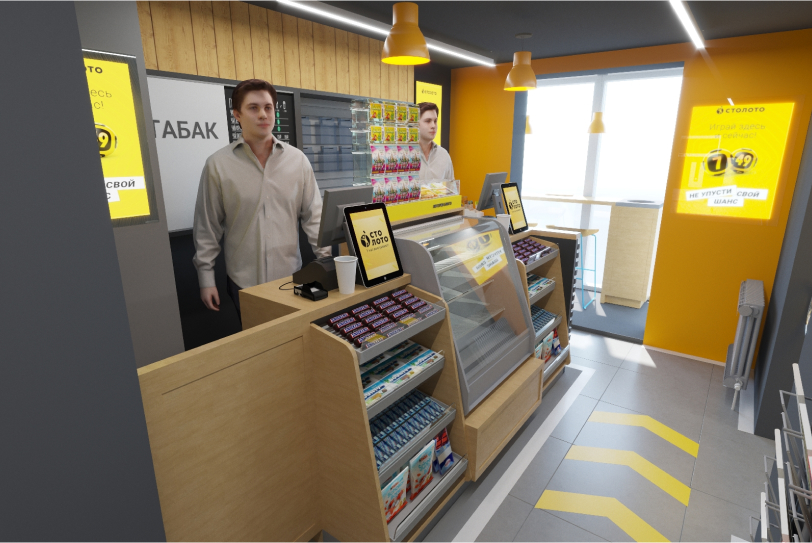
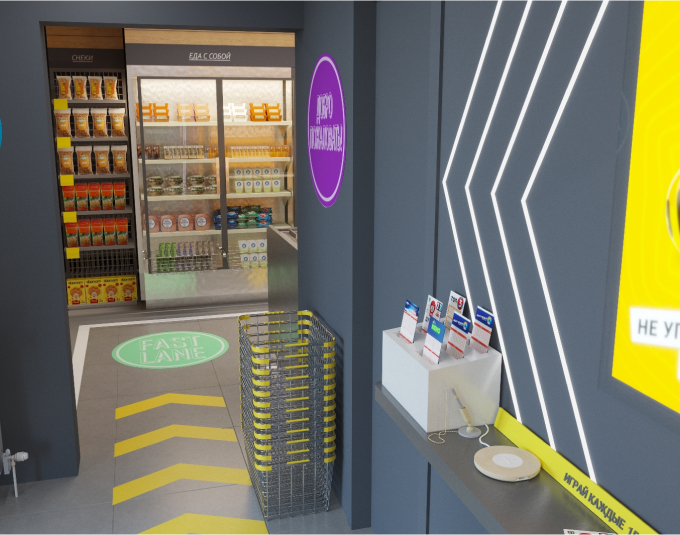
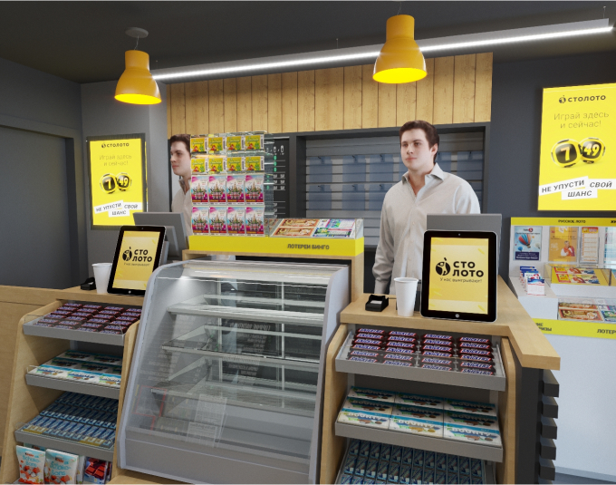
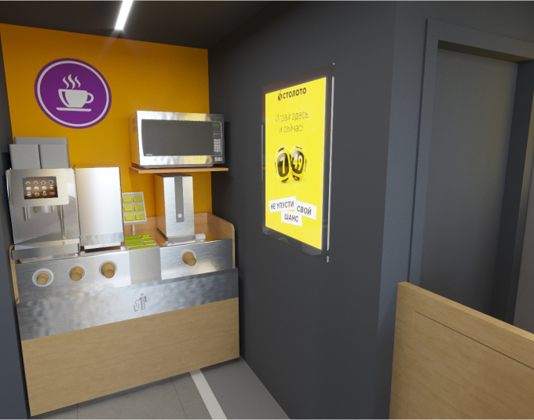

{kind=link}
Мы используем файлы cookie, чтобы обеспечивать правильную работу нашего веб-сайта, персонализировать рекламные объявления и другие материалы, обеспечивать работу функций социальных сетей и анализировать сетевой трафик. Мы также предоставляем информацию об использовании вами нашего веб-сайта своим партнерам по социальным сетям, рекламе и аналитическим системам.
Сити Киоск
дизайн новой сети супермаркетов
Сити Киоск – новая розничная сеть в Москве и Московской области, которая сочетает в себе зоны кафе и минимаркета и предлагает широкий ассортимент товаров повседневного и импульсного спроса. Отличительная черта новых магазинов – зона с точкой продаж «Столото»: здесь можно приобрести все виды лотерейных билетов, проверить или получить выигрыш, а также узнать о правилах проведения и механике розыгрышей. Демократичный подход и легкость в общении с персоналом создают доверительную атмосферу и позитивный настрой.


Минимаркет «Сити Киоск» заслуживает стать любимым местом для совершения быстрых покупок. Открытая демонстрация товара и логичное зонирование помогают посетителю легко ориентироваться в пространстве магазина. А прозрачная система специальных предложений, скидок и акций позволяет покупателю сделать лучший выбор. В магазинах с большей площадью могут также появляться зоны по предоставлению различных услуг: пункт приема химчистки, аптека, цветочный магазин, пункт выдачи интернет-заказов и пр., что обеспечивает комплексный подход при оказании сервиса покупателям.
В задачи Shopworks входило:
- Бенчмаркинг. Исследование и анализ лучших мировых практик в области минимаркетов. Мы отобрали несколько десятков интересных примеров среди сетевых магазинов и частных бизнесов, подчерпнув лучшие идеи по оформлению и наполнению пространства и изучив различные подходы к бизнесу.
- Брендинг. Разработка логотипа, фирменного стиля и брендбука, на основе которого был создан уникальный графический стиль: различные POSM, имиджевые и акционные макеты. (В скобках отметим, что брендбук был принят заказчиком без единого исправления).
- Планировочные решения и зонирование. Важной задачей было грамотно разместить зоны разных партнеров – кафе и магазин, сделав путешествие покупателя по магазину максимально эффективным.


Интерьерное решение и дизайн-концепция, предложенные нашими дизайнерами, отражают стиль большого города и стремительный ритм жизни в нем, что отвечает главной идее магазина о быстрой покупке на ходу.
Особое внимание было уделено кассовой зоне, которая стала ключевой зоной всего помещения, так как здесь не только происходит оплата товара, но и располагаются зоны кафе и продажи билетов «Столото». Дополнительной задачей было сделать на кассе очень яркую зону импульсной покупки, представляющую собой красочную выкладку разнообразных снеков, сладостей, прохладительных напитков и непродовольственных товаров: зарядок для гаджетов, батареек, сезонных товаров и прочего.
Последним и одним из самых важных этапов стала разработка стайлбука – руководства по созданию сети магазинов, в котором содержится вся информация о дизайн-концепции, правилах создания планировочных решений для нестандартных помещений, используемых материалах и т.д.
WigWig
Разработка новой
дизайн-концепции
для магазина подарков
дизайн-концепции
для магазина подарков